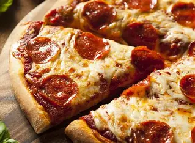

La pizza es uno de los platos más icónicos de la gastronomía italiana, nacida en Nápoles y conquistada el mundo entero. Su base de masa crujiente o esponjosa, cubierta con salsa de tomate y mozzarella derretida, es el lienzo perfecto para infinitas combinaciones de ingredientes.
Desde la clásica Margherita hasta versiones con rúcula, prosciutto o mariscos, la pizza se adapta a todos los gustos. Hoy en día es uno de los alimentos más consumidos globalmente, con variantes locales en cada país que la han hecho propia.